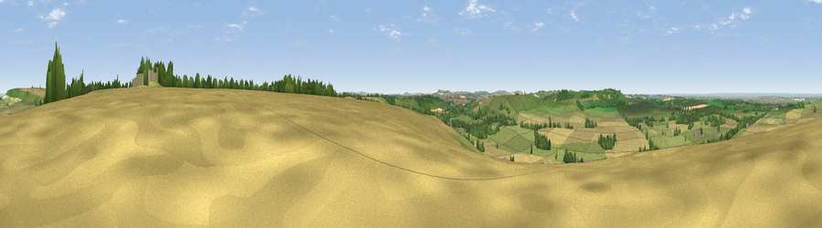

Viewpoint near Ogbourne St George
#9664 in England · top 15% of its area beats it · near Ogbourne St GeorgeWhere it is
The exact computed spot (SU 20525 76300). Click the marker for map links.
The view, rendered

A 360° render of this exact spot computed from the terrain model, tree cover and land cover — summer colours, afternoon light, calibrated against photographs of famous viewpoints. Real trees, hedges and buildings will differ in detail.
The panorama
Grey silhouette: terrain skyline in each direction (720 bearings, Earth curvature and refraction included). Dashed green: skyline with trees (+15 m) and buildings (+8 m) as obstacles. Blue strip: how far the ground is visible on each bearing.
Where the view opens
Wedge length = distance to the farthest visible ground on that bearing (vegetation-aware). Rings at 10, 25 and 50 km.
What fills the view
51% cropland · 38% grassland · 9% woodland · 2% built-up
Angular shares of the visible panorama (visual magnitude), not map area. Landscape diversity 0.44 (0–1 Shannon).
Key numbers
More beautiful places nearby
The staircase of upgrades: each row has a higher view potential than everything closer. Driving times are estimates from straight-line distance, calibrated against real road routing — check an actual route before setting out.
| Place | Direction | Drive | Score |
|---|---|---|---|
| Viewpoint near Ogbourne St George | SW · 3 km | ~7 min | 64.9 |
| Viewpoint near Liddington | N · 3 km | ~8 min | 73.4 |
| Viewpoint near Liddington | NNE · 4 km | ~9 min | 74.4 |
| Martinsell viewpoint | SSW · 13 km | ~24 min | 76.9 |
| Viewpoint near Nympsfield | WNW · 48 km | ~69 min | 77.5 |
| Painswick Beacon | NW · 49 km | ~70 min | 79.6 |
| Viewpoint near Great Witcombe | NW · 49 km | ~70 min | 80.5 |
| Nottingham Hill | NNW · 57 km | ~79 min | 80.9 |
51.48528, -1.70580 · source: screening · position refined by local search. Computed location — check access rights before visiting.